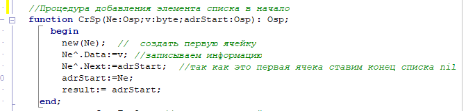
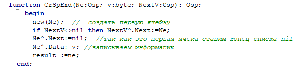
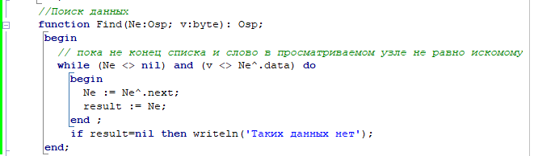
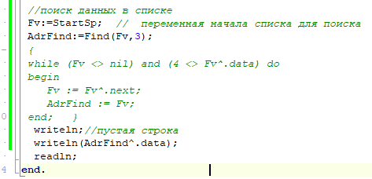

Линейный односвязный список
Как следует из названия, каждый элемент такого списка содержит указатель на следующий элемент. Таким образом, тип информации элемента должен быть записью (структурой). Односвязный список можно определить с помощью описаний типов (см. пример 1).
В списке предусмотрено заглавное звено. Указатель списка (l1), значение которого - адрес заглавного звена, представляет список как единый объект.
Указатель на следующий элемент в последнем звене списка имеет значение nil (NULL).
Недостаток: По односвязному списку можно двигаться только от заглавного звена к последнему. Начинать можно с любого звена в списке, но если вдруг возникнет необходимость обратиться к предшествующим элементам, придется начинать с заглавного звена, что неудобно, нерационально и усложняет алгоритм обработки.
Для списков, кроме операций, рассмотренных ранее для очередей и стеков, существуют операции:

Добавление элемента в начало списка

Добавление элемента в конец списка
Поиск элемента в списке и вывод на экран

Использование функции поиска и вывод на экран

Вывод на экран всего списка